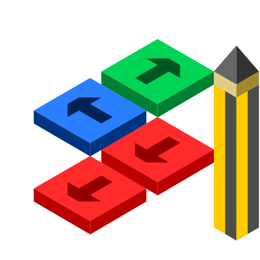
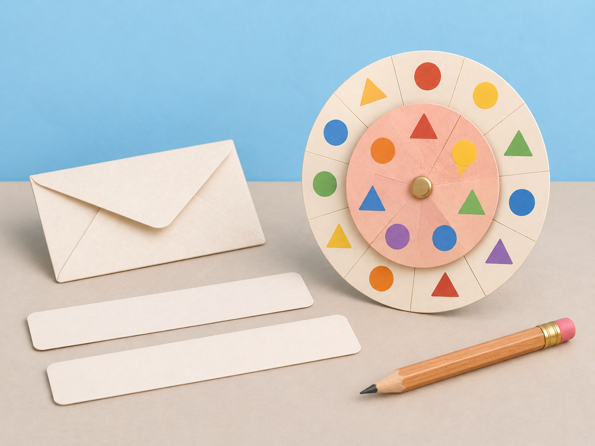

Desendollat (sense robot) Tercer cicle Matemàtiques ⏱️ 4 sessions de 50 minutsEspies escolars: missatges i privacitat
🏷️ Convivència i ciutadania digital
🌱 Situació, repte i intenció
La pregunta de seguretat no és «com amaguem la contrasenya?», sinó «quina informació convé no compartir, amb qui i per quin canal?». No es demanen contrasenyes, noms d'usuari, missatges privats ni experiències personals. Tots els exemples són inventats i es poden substituir si recorden massa dades reals.
🎯 Aprenentatges i vocabulari
- Representar lletres i símbols amb una regla acordada, i aplicar la regla de manera consistent.
- Descriure un procediment pas a pas, detectar un error de codificació i corregir-lo amb una prova.
- Comparar codis segons quantes possibilitats tenen, la facilitat d'ús i la facilitat amb què una persona externa els pot deduir.
- Distingir entre un joc de substitució, una contrasenya i els mecanismes de seguretat dels serveis digitals.
- Proposar hàbits de privacitat respectuosos: minimitzar la informació compartida, verificar el destinatari i demanar ajuda davant d'un missatge sospitós.
🧰 Materials i preparació
Prepareu cartolina, tisores, llapis, una plantilla de dues rodes concèntriques o una taula de substitució, sobres i targetes. Feu una demostració prèvia amb una paraula neutra. Acordeu un alfabet comú —per exemple, A–Z sense accents— i expliqueu com es representen l'espai, la ñ, les majúscules i la puntuació. Si s'inclouen accents, afegiu-los explícitament al repertori; no doneu per fet que totes les taules els codifiquen igual.
Prepareu missatges breus inventats com ara «EL MAPA ESTA AL PUNT BLAU» o instruccions de cerca d'un objecte fictici. Eviteu informació personal, dades de dispositius i qualsevol contrasenya real. En grups diversos, oferiu la roda impresa ja retallada o una taula gran per reduir la càrrega de motricitat fina.
📅 Seqüència didàctica
Missatge, codi i destinatari (50 min)
Fase 1 · Activem i prediem
Presenteu una targeta amb símbols inventats i pregunteu què necessita saber el receptor per interpretar-la. Recolliu idees: clau compartida, alfabet, ordre i separació de paraules.
Fase 2 · Explorem i construïm
Codifiqueu conjuntament una paraula amb una taula de substitució simple i demaneu a una altra parella que la descodifique. Introduïu emissor, missatge, codi i receptor com a parts d’un procés comunicatiu, sense equiparar el paper amb Internet.
Fase 3 · Expliquem i registrem
Cada parella crea una clau visual i codifica una instrucció fictícia de fins a sis paraules. Anoteu l’alfabet acordat, la separació d’espais i qualsevol convenció que haja calgut aclarir.
Fase 4 · Apliquem i millorem
Intercanvieu les instruccions i reviseu la clau o les convencions si la parella receptora no pot reconstruir-les. Manteniu els missatges inventats i sense informació personal.
Fase 5 · Comprovem i reflexionem
Expliqueu quina informació necessita el destinatari per recuperar el missatge.
Roda de Cèsar i depuració (50 min)
Fase 1 · Activem i prediem
Trieu un desplaçament acordat —per exemple, tres lletres— i prediu com es transformaran les primeres lletres. Declareu alfabet i direcció abans de començar.
Fase 2 · Explorem i construïm
Munteu la roda amb un alfabet exterior i un interior i una finestra clara per llegir correspondències. Manteniu la mateixa direcció per xifrar i desxifrar.
Fase 3 · Expliquem i registrem
Intercanvieu missatges. La parella receptora escriu la regla abans de llegir i registra el resultat. Si el text no té sentit, reviseu alfabet, espais i direcció: és depuració, no un fracàs.
Fase 4 · Apliquem i millorem
Compareu la versió inicial amb la descodificada i corregiu una ambigüitat de la regla. Amb 26 lletres, compteu quants desplaçaments no trivials hi ha i comenteu què pot passar si algú conserva una còpia de la clau.
Fase 5 · Comprovem i reflexionem
Dibuixeu el pas més propens a error i expliqueu com l’heu verificat.
Atacs de joc i límits del codi (50 min)
Fase 1 · Activem i prediem
Doneu a una tercera parella un missatge xifrat i una pista: provar desplaçaments, buscar una paraula probable o observar repeticions. Predigueu què podria revelar el text sense conéixer la clau.
Fase 2 · Explorem i construïm
La parella prova les claus possibles o analitza patrons per recuperar el missatge. L’activitat és un joc de paper; no es prova d’accedir a cap sistema ni compte.
Fase 3 · Expliquem i registrem
Compareu el xifrat de Cèsar amb una substitució inventada. Registreu quantes possibilitats té cada codi i quina pista ha ajudat a llegir el missatge.
Fase 4 · Apliquem i millorem
Cada equip afegeix al missatge una nota que explique què ha fet possible recuperar-lo. Compareu si augmentar les combinacions dificulta la lectura manual i què no resol.
Fase 5 · Comprovem i reflexionem
Expliqueu per què una transformació de paper no es converteix en seguretat moderna només perquè siga més difícil de llegir.
Privacitat quotidiana i protocol d’aula (50 min)
Fase 1 · Activem i prediem
Classifiqueu situacions fictícies en tres respostes: compartir amb tothom, compartir només amb persones de confiança o no compartir. Useu exemples com horari públic, adreça de casa, fotografia d’un company sense permís i codi d’accés del centre.
Fase 2 · Explorem i construïm
Justifiqueu cada decisió considerant context, consentiment i destinatari. No assumiu que tota dada té el mateix nivell de sensibilitat ni demaneu experiències personals.
Fase 3 · Expliquem i registrem
En grup, redacteu cinc passos davant d’una petició inesperada: aturar-se; no enviar dades ni obrir enllaços; comprovar qui ho demana per un canal conegut; demanar ajuda a una persona adulta de confiança; comunicar l’incident segons les normes del centre.
Fase 4 · Apliquem i millorem
Un altre equip revisa el protocol i comprova que cada pas siga concret, respectuós i aplicable. Reviseu les instruccions que deixen dubtes sobre a qui consultar o què no s’ha de fer.
Fase 5 · Comprovem i reflexionem
Presenteu un cartell final sense noms ni exemples identificables i expliqueu una acció segura quan no reconeixeu el destinatari.
🧪 Evidències i avaluació
- Roda o taula amb la clau indicada i les convencions d'escriptura visibles.
- Un missatge xifrat i la seua descodificació, amb una explicació que una altra parella puga seguir.
- Una revisió d'error on l'alumne assenyala el pas que ha corregit i com ho ha comprovat.
- Una comparació argumentada entre el codi de joc i una pràctica real de privacitat.
- El protocol d'aula, revisat perquè cada pas siga concret, respectuós i aplicable.
Indicadors d'observació: aplica la regla sense canviar-la a mitja seqüència; detecta almenys una ambigüitat; explica per què un codi senzill es pot deduir; evita proposar que s'hi amaguen dades personals; i identifica una acció segura quan no reconeix el destinatari. Accepteu explicacions orals, esquemes o demostracions pràctiques.
♿ Participació, accessibilitat i seguretat
En equips de tres o quatre, repartiu els rols d'emissor, lector de la clau, receptor i observador del procediment. Canvieu-los en cada prova perquè tothom haja de produir i interpretar el codi. L'observador marca en una llista si s'ha declarat l'alfabet, la direcció, el tractament dels espais i la clau, i comunica un punt fort i una pregunta de millora.
Inclusió i ampliacions
Per facilitar l'accés, oferiu alfabet en lletra gran, peces mòbils, contrast alt i missatges més curts; permeteu dictar la resposta o treballar amb una parella. Qui necessite més repte pot comptar totes les claus possibles, comparar una substitució monoalfabètica amb una transposició de targetes, o escriure pseudocodi amb passos com «llegir símbol, trobar equivalència, escriure lletra». No cal introduir aritmètica modular formal si no correspon al nivell.
Seguretat i abast
El xifratge Cèsar és una simulació històrica i no protegeix informació real. No s'utilitza per guardar contrasenyes ni per enviar informació privada. La maqueta ensenya la idea de transformar i recuperar un missatge, però no representa els protocols, les claus ni les defenses actuals dels serveis digitals. Si apareix una experiència de risc real, atureu el joc, escolteu sense exposar la persona davant del grup i seguiu el procediment de protecció del centre.
🔗 Referents i adaptació
La proposta connecta el raonament matemàtic, la seqüenciació pròpia del pensament computacional i l'ús crític i responsable de la informació. El producte final pot quedar com a cartell d'aula amb el protocol, sense noms ni exemples que identifiquen cap alumne. Per continuar, compareu com una mateixa instrucció es representa amb paraules, pictogrames i símbols, i què guanya o perd cada representació.